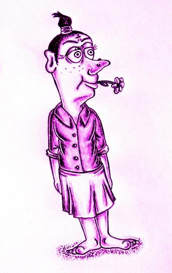
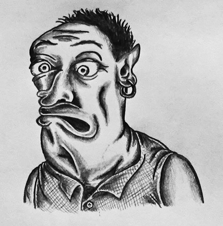
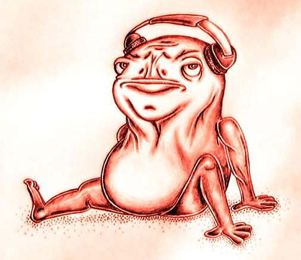

Arto Eskelisen kotisivut

Tietoja minusta
Olen toukokuussa 1995 syntynyt mikkeliläinen tyhjäntoimittaja. Viihdyn oivasti omissa oloissani eikä tapanani ole pitää suurta meteliä touhuistani. Olen kuulemma luotettava, täsmällinen sekä ahkerakin jopa toisinaan. Ongelmien ratkaisu, asioiden pohtiminen ja itseilmaisu tuovat suurta mielihyvää säälittävään pikku elämääni. Sama pätee kelvottomaan huumorintajuuni.
Opinnot
Valmistuin lukiosta 2014, mitä seurasi 347 haaskattua vuorokautta maastopukuun tälläytyneenä. Armeijan jälkeen etsin työn ohella seuraavaa askeltani, media-alan opintoja, pari vuotta. Aloitettuani em. opinnot 2017 Outokummussa tein aiheeseen liittyviä töitä ensin nuorena yrittäjänä ja sittemmin kevytyrittäjänä aina marraskuun 2021 loppuun asti. Hommien pirstaleisuus yhdistettynä epävarmuuteen (mm. korona-aika) söivät innon alaa kohtaan ammattimielessä. Tätä nykyä häärään IT-alan kimpussa ja toivon sen tuovan aikanaan tasaisen leivän pöytään.
Harrastukset
Harrastukset ne ovat elämän suola. En tohdi muuttaa niitä ammatiksi; pelkään sen näet taannuttavan huvin luovuutta kahlitsevaksi typerryttäväksi puurtamiseksi. Nautin kynäilyn lisäksi suuresti soittimien - kuten ukuleleen, bassokitaran tahi koskettimien - kiduttamisesta, lenkkeilystä, lukemisesta ynnä (wanhoista) videopeleistä. Yhdistän soppaan kernaasti myös aiemmin omaksumiani media-alan oppeja video- ja valokuvauksen saralla. Alla otteita omaksi huvikseni väkerretyistä töherryksistä.

- 

- 
- 
Työkokemus

Takanani on noin 7 vuotta kokemusta jakelutyöstä ilmaislehtien parissa, puolisen vuotta viheralueiden kunnossapitotöitä sekä näkökulmasta riippuen 2-3 vuotta media-alan keikkahommia. Jälkimmäisissä vastuualuettani ovat olleet kuvaus videon jälkitöineen; joissain tapauksissa myös äänitys. Striimasin lisäksi muutaman vuoden ajan Outokummun kaupunginvaltuuston kokouksia YouTubeen (operoin siis kameroita + mikrofoneja äänimikserin kautta + itse lähetystä), mutta menneet kokoukset on valitettavasti jo poistettu palvelimelta. Sain toki työtodistuksen panoksestani.
Tässä kaksi asiakastyötä parin vuoden takaa: Outokummun Motoristikahvilan kesäkauden päätösajo
ja "talkootyönä" toteutettu Fidan Joensuun osaston retromuotinäytös Nenäpäivänä.
Sosiaalinen media
Ähäkutti, meikäläistäpä ei löydy mistään somekanavista! Roikuin aikoinani tovin Facebookissa vaan enpä kokenut palvelua millään muotoa hyödylliseksi, ellei päämäärätöntä ajankuluttamista sellaiseksi lasketa. Twitterit tahi muut suositut alustat ovat niinikään jääneet kokeilematta. En myöskään omista älypuhelinta joten yhteyden ottaminen osoittautuu verrattain vanhakantaiseksi. Voe tokkiisa.